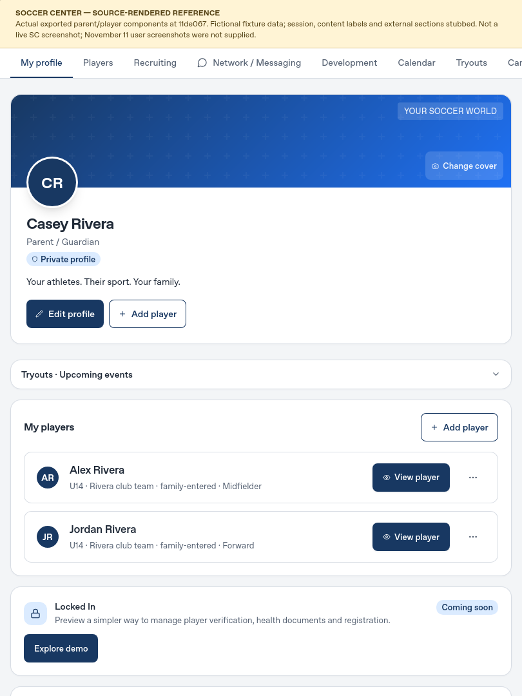
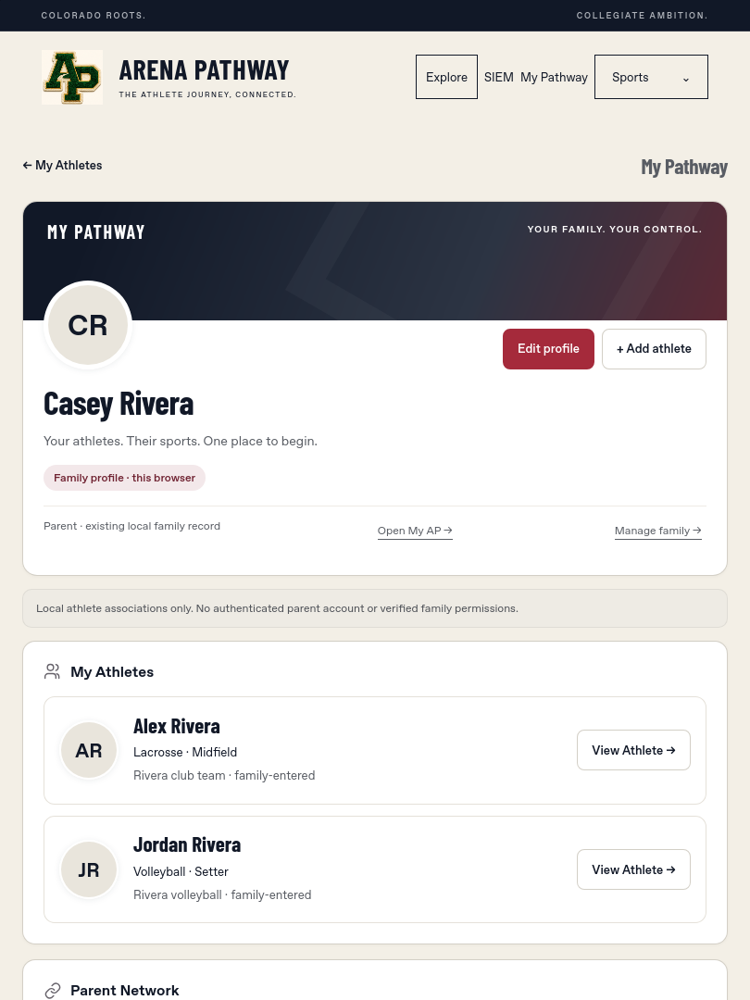

Left: previously captured read-only Soccer Center source-rendered reference at 11de067 with fixtures. Right: current AP application, actual WebKit screenshot.
The user's November11 original screenshots and exact SC18 archive are unavailable; this is not a live-production or exact-version comparison.

